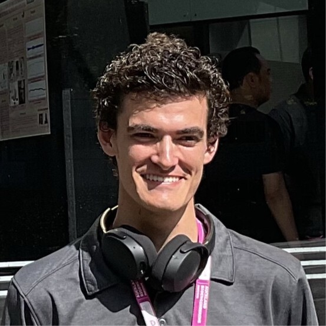

|
Blake Tolmie
I’m a Mechatronics Engineering student at the University of Canterbury with a hands-on background in industries like boat building, beekeeping, and logistics. My project work spans embedded systems, PCB and CAD design, and real-time C programming on STM32 microcontrollers. I’ve travelled widely—from China to Mexico—and bring a practical, people-focused mindset to engineering. I’m passionate about designing tools that empower others and solve real-world problems.
CV /
LinkedIn /
Email
|

|
|
About Me
Before starting my degree, I explored a variety of industries, including floor sanding, roofing, boat building, beekeeping, and forklift driving. These hands-on experiences gave me a broader perspective on how people live, work, and solve problems.
My travel experiences across the world to the countries like U.S., Mexico, China, and Australia has further sharpened my ability to collaborate with people from all walks of life, think on my feet and approach challenges creatively. What drives me isn't just the challenge of making things work, but the responsibility of making things that matter.
I want to design tools and technologies that empower others - "things that make things" - while also being mindful of the people and environments they affect.
I’m currently studying Mechatronics Engineering at University of Canterbury, where I’ve learned to design, build, and integrate systems across mechanics, electronics, and embedded software through various projects seen below.
These projects include writing real-time C firmware for STM32 microcontrollers, designing and simulating PCBs, integrating sensors and displays via I²C and SPI, and implementing control algorithms for dynamic systems. I’ve also developed CAD models in SolidWorks and Fusion 360, worked with 3D printing and CAM workflows, and gained hands-on skills in debugging, version control (Git), and system-level design.
These experiences have given me practical skills in system-level thinking, debugging with oscilloscopes and logic analyzers, version control with Git, and cross-disciplinary collaboration in complex mechatronic projects.
|
Experience & Achievements Overview
- [Mar. 2025] Began roles as Mechatronics Mentor and UniBuddy Ambassador at the University of Canterbury.
- [Feb. 2025] Appointed Road Bike Representative for UC Bike Club, organizing weekly events and fostering inclusive participation.
- [Feb. 2025] Completed summer research internship at Auckland Bioengineering Institute, designing soft valves for MHD soft robotics using electropermanent magnets.
- [Nov. 2024] Rehired by Solution Dynamics for a second summer term in stores and forklift operations.
- [Oct. 2024] Elected Secretary of UC Flight Club, managing communications and coordinating industry events.
- [Jul. 2024] Awarded Ngāpuhi Education Scholarship in recognition of academic excellence and iwi contribution potential.
- [Jul. 2023] Began role as Campus Tour Guide at the University of Canterbury.
---- show more ----
- [Feb. 2023] Began studies in Mechatronics Engineering at the University of Canterbury.
- [Feb. 2023] Completed first term at Solution Dynamics in logistics and forklift operations.
- [Oct. 2022] Completed role at Lancer Industries (SEALEGS) as a boat builder specializing in Hypalon tubes.
- [Oct. 2022] Concluded 7-year operation of The Bee Brothers & Co beekeeping business.
- [Mar. 2022] Completed role at Natural Roofing Products
- [Nov. 2021] Completed role at Auckland Flooring
|
Selected Projects
-
Embedded Systems & Control
- Step Counter (STM32): Programmed a real-time step counting system using STM32 microcontroller and C in STM32CubeIDE. Integrated low-level sensor data processing and user feedback.
- UC Fun Kit Multiplayer Game: Developed an interactive multiplayer game of rock-paper-scissors using IR communication, buttons, and OLED display; coded in C.
- Line Following Robot: Designed and programmed a robot using custom PCB and microcontroller firmware in C. Placed 8th out of 38 teams with a time of 14.9 seconds.
- Elevator Control System: Programmed a PLC to simulate elevator logic using ladder logic with PID control and SCAN algorithm for scheduling.
-
CAD, CAM & Mechatronic Design
- PCB Pick & Place Machine: Designed custom SolidWorks parts and created G-code for CNC operation of a PCB pick-and-place machine.
- CNC Coaster Project: Created a coaster design in SolidWorks, generated 3-axis CNC toolpaths using HSMWorks for mill manufacturing.
- Model Car (ENMT221 Project): Designed and refined a 3D model of a functional car using SolidWorks.
-
Rocketry & Aerospace Projects
- Flight Computer – UC Aerospace Club: Designed, assembled, and programmed a custom PCB flight computer using KiCad and embedded C for telemetry and control.
- Level 1 Rocket (UC Aerospace Club): Collaborated in a multidisciplinary team to build and launch a fully functional rocket meeting Level 1 certification standards.
-
Other Projects
- RoboCup (ENMT301): Programmed and built an autonomous robot for a competitive robotics challenge, applying embedded systems, sensor fusion, and design optimization.
- Automated Club Email System: Developed an automated email distribution tool using Google Apps Script to streamline communication with all UC Flight club members.
|
Awards
-
Ngāpuhi Education Scholarship (2024)
The Ngāpuhi Education Scholarship supports students of Ngāpuhi descent who are committed to academic success and aspire to contribute their knowledge and skills to the wellbeing and development of Ngāpuhi whānau, hapū, and iwi.
-
NCEA Biology Scholarship (2018)
The NCEA Biology Scholarship is a prestigious award offered annually to New Zealand secondary school students who demonstrate exceptional ability in biology. The scholarship is designed to identify and reward students who show advanced understanding, critical thinking, and the ability to integrate and apply biological concepts to complex situations.
-
Youth Excellence Award, North Harbour Club AIMS awards (2015)
Recognized for Innovation in Beekeeping. Awarded $3,000 and a 3D printer (valued at $20,000) through the AIMES program.
Used the funding to develop custom beekeeping tools that combined agriculture with emerging technologies.
[Scoop News Article]
|
|
{kind=link}